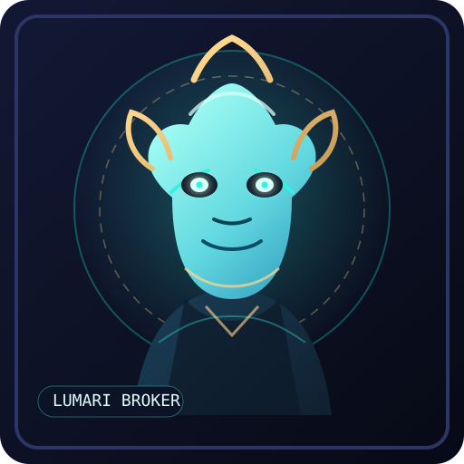
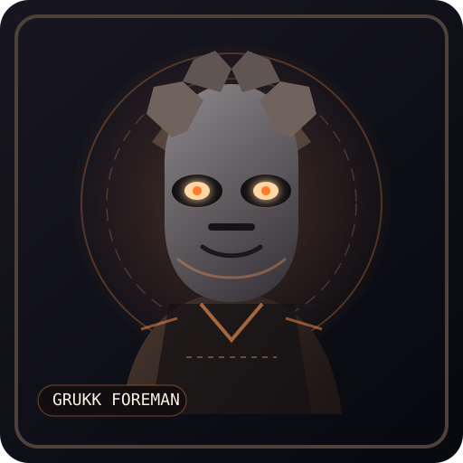
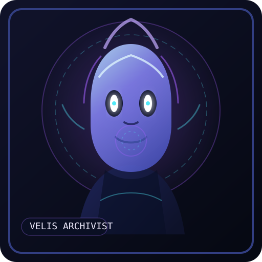
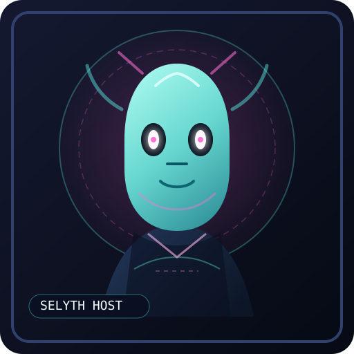
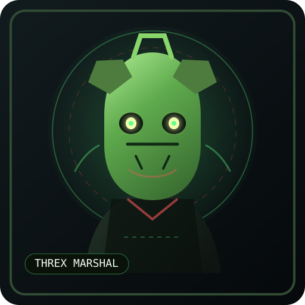

Trade / Diplomacy
Lumari Broker
High-trust, polished envoy silhouette with gold filigree and luminous eyes—ideal for market intel, contracts, or executive menu presence.
First-pass menu portrait ideas for Star Freight Tycoon: polished enough to suggest a real UI direction, still loose enough to iterate. The visual target is retro-futurist commerce drama—less space horror, more interstellar boardroom.

High-trust, polished envoy silhouette with gold filigree and luminous eyes—ideal for market intel, contracts, or executive menu presence.

Basalt-horned labor boss built for rugged routes, ore contracts, and frontier flavor. Reads dependable, expensive, and mildly terrifying.

Translucent scholar with a data-orb motif—good fit for market forecasts, event briefings, medical worlds, and high-tech systems.

An elegant avian-social species concept for passenger hubs, resort planets, luxury events, and brand-polished menu moments.

Reptilian dock authority with warning-red accents. Great for route hazards, blockades, inspections, and “this will affect margins” energy.